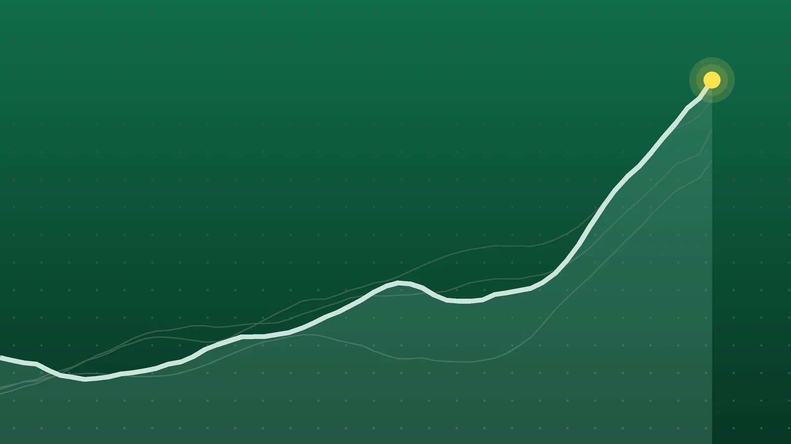

SportsExplainer
Sports Scores, Oct. 23: Brewers Win World Series Game 1, 3-2
Milwaukee held on after a reversed double play let Tampa Bay score in the ninth, Nathan MacKinnon had four points in Denver, and Afghanistan finished a tri-series unbeaten.

Quick take
- Milwaukee beat Tampa Bay 3-2 at American Family Field to lead the best-of-seven World Series 1-0; Game 2 is Saturday, Oct. 24.
- Nathan MacKinnon had a goal and three assists as Colorado beat Tampa Bay 6-3, and Jake Evans scored twice in Montreal’s 4-1 win in Chicago.
- Afghanistan beat Zimbabwe by seven wickets in Sharjah to win the UAE ODI tri-series, with Ibrahim Zadran unbeaten on 70.
- Top seeds Daniil Medvedev, Flavio Cobolli, Arthur Fils and Elena Rybakina all won Friday quarterfinals.
Why it's trending Friday, Oct. 23, brought World Series Game 1, two NHL games, one match in each of five European soccer leagues, a cricket final and tennis quarterfinals at five tour events.
Sports scores for Oct. 23
Milwaukee struck first and then held on. The Brewers beat Tampa Bay 3-2 at American Family Field in Game 1 of the World Series and lead the best-of-seven series 1-0. The Rays scored in the ninth only after a replay review wiped out what had looked like a game-ending double play, according to AP. AP noted this is the first World Series since 1980 in which both teams are chasing a first title. For the matchup’s background, see our World Series preview.
In the NHL, Nathan MacKinnon set up three goals and scored another as Colorado beat Tampa Bay 6-3, and Montreal won 4-1 in Chicago. Overseas, five European leagues played one Friday match each, Afghanistan won a one-day tri-series final in Sharjah, and five tennis events played their quarterfinals.
This post gathers Friday’s results from leagues without a roundup of their own. See also our NBA scores for Oct. 23 and college football scores for Oct. 23. Formula 1 held practice in Austin, not a race.
MLB and NHL
| League | Winner | Score | Loser | Note |
|---|---|---|---|---|
| MLB | Milwaukee Brewers | 3-2 | Tampa Bay Rays | World Series Game 1; Brewers lead 1-0 |
| NHL | Montreal Canadiens | 4-1 | Chicago Blackhawks | Jake Evans 2 goals, 1 assist; Jacob Fowler 20 saves |
| NHL | Colorado Avalanche | 6-3 | Tampa Bay Lightning | MacKinnon 1 goal, 3 assists; Jake Guentzel 2 power-play goals |
European soccer
| League | Home | Score | Away | Goals |
|---|---|---|---|---|
| Premier League | Ipswich Town | 1-1 | Nottingham Forest | Neco Williams (NFO), Julio Enciso (IPS) |
| La Liga | Alaves | 1-1 | Malaga | Adrian Nino (MAL), Aitor Manas (ALA) in the 89th minute |
| Serie A | Torino | 3-2 | Monza | Kian Fitz-Jim, Rafik Belghali, Nikola Vlasic (TOR); Gustavo Varela, Nathan Patterson own goal (MON) |
| Bundesliga | VfB Stuttgart | 2-3 | Borussia Monchengladbach | Ermedin Demirovic 2 (STU); Joe Scally, Shuto Machino, Wael Mohya (BMG) |
| Ligue 1 | Brest | 1-2 | Nice | Ludovic Ajorque (BRE); Elye Wahi, Sofiane Diop (NIC) |
Scorers come from 101 Great Goals, Naiz, Sport Mediaset, Bundesliga.com and Foot Mercato, each matched by a second outlet. Gladbach’s win was its first of the season, and Torino has now won three in a row. Malaga, which sits last in La Liga, conceded its lead one minute from the end of regulation.
Cricket
| Match | Result | Scores | Note |
|---|---|---|---|
| UAE ODI tri-series final, Sharjah | Afghanistan beat Zimbabwe by 7 wickets | Zimbabwe 169 (43.3 overs); Afghanistan 170-3 (34.3 overs) | Ibrahim Zadran 70 not out; Rashid Khan 3-41 |
Tennis quarterfinals
ATP 250s: Almaty, Lyon and Brussels
| Event | Winner | Score | Loser |
|---|---|---|---|
| Almaty | Daniil Medvedev (1) | 6-4, 6-4 | Terence Atmane |
| Almaty | Alexander Bublik (3) | 4-6, 7-6 (5), 7-6 (5) | Karen Khachanov (5) |
| Almaty | Stefanos Tsitsipas (7) | 6-3, 6-4 | James Duckworth |
| Almaty | Nikoloz Basilashvili (Q) | 6-3, 6-1 | Adrian Mannarino |
| Lyon | Flavio Cobolli (1) | 4-6, 6-4, 6-4 | Brandon Nakashima (5) |
| Lyon | Taylor Fritz (2) | 7-6 (5), 6-2 | Daniel Altmaier |
| Lyon | Tommy Paul (4) | 6-4, 3-6, 6-3 | Corentin Moutet |
| Lyon | Lorenzo Musetti (6) | 7-6 (5), 6-7 (7), 6-4 | Luca Van Assche |
| Brussels | Arthur Fils (1) | 6-4, 7-6 (12) | Alex Michelsen (5) |
| Brussels | Tallon Griekspoor | 4-6, 6-4, 6-3 | Jiri Lehecka (2) |
| Brussels | Francisco Cerundolo (3) | 6-2, 6-4 | Clement Chidekh (Q) |
| Brussels | Jan-Lennard Struff | 6-3, 7-6 (6) | Zizou Bergs |
WTA: Ningbo (500) and Osaka (250)
| Event | Winner | Score | Loser |
|---|---|---|---|
| Ningbo | Elena Rybakina (1) | 6-1, 3-6, 6-1 | Katarzyna Kawa (Q) |
| Ningbo | Diana Shnaider (6) | 6-3, 4-6, 6-1 | Iva Jovic (4) |
| Ningbo | Leylah Fernandez | 4-6, 6-2, 6-1 | Ekaterina Alexandrova |
| Ningbo | Marie Bouzkova | 6-3, 6-4 | Sara Bejlek |
| Osaka | Ann Li | 6-4, 3-6, 7-6 (0) | Lilli Tagger |
| Osaka | Katerina Siniakova | 6-1, 6-2 | Mary Stoiana |
| Osaka | Ashlyn Krueger | 6-1, 6-3 | Talia Gibson |
| Osaka | Katie Boulter | 3-6, 6-3, 6-3 | Antonia Ruzic |
Seeds are in parentheses; Q marks a qualifier. ATP scores are from the ATP Tour, whose pages date them Oct. 24, though TASS and The Sports Encounter confirm Friday play. WTA scores are from Tennis Now, WTA.com and Tennis Tonic.
Brewers 3, Rays 2: a call reversed, then a strikeout
Milwaukee scored twice in the first against Nick Martinez on Christian Yelich’s run-scoring triple and William Contreras’ RBI single, per AP and CBS Sports. Jackson Chourio drove in Cooper Pratt in the seventh for a 3-1 lead. Jacob Misiorowski worked five innings and allowed one run; AP said his first pitch, at 103.5 mph, was the fastest ever thrown in a World Series.
In the ninth, Trevor Megill gave up one-out singles to Jonathan Aranda and Simpson, the Rays pulled off a double steal, and Caminero walked. Liam Hicks then grounded into an apparent double play, but replay showed Pratt’s foot was off second base, so a run counted. Megill ended it by striking out Jonny DeLuca. Aranda reached base all four times, and AP counted Tampa Bay 0 for 6 with runners in scoring position.
Avalanche 6, Lightning 3: MacKinnon’s four points
Colorado was up 3-0 just 24 seconds into the second period. Devon Toews and Nazem Kadri, on a power play, scored in the first, and Fedor Svechkov added one right after the break. Guentzel answered twice on the power play for Tampa Bay, and Artturi Lehkonen scored in between. MacKinnon’s goal in the third made it 5-2 before Martin Necas added an empty-netter. Mackenzie Blackwood stopped 31 of 34 shots, according to ColoradoAvalanche.com, which said MacKinnon reached 1,300 career points, regular season and playoffs combined. AP said Kucherov is still level with Steven Stamkos for the Lightning’s career points record, at 1,137, and that the loss ended Tampa Bay’s three-game winning streak.
Afghanistan’s unbeaten tri-series
Zimbabwe chose to bat and was bowled out for 169, with Sikandar Raza scoring 68. Rashid Khan took three wickets and Mohammad Nabi two. Ibrahim Zadran then anchored the chase with 70 not out from 96 balls, helped by Rahmat Shah’s 43, Amu TV reported. Rashid was player of the series with 11 wickets, and Samaa TV noted Afghanistan didn’t lose a match in the event.
What it means
- World Series: Milwaukee needs three more wins; Tampa Bay needs four of the next six games. Games 3, 4 and 5 (if needed) move to Tropicana Field, per TMJ4.
- NHL: Colorado (6-4-1) snapped a two-game skid on the road. Montreal is 5-3-2 and Chicago 3-7-0, per NHL.com; the Blackhawks have dropped two straight.
- Soccer: home teams won just one of five matches, with two draws and two away wins.
- Cricket: Afghanistan won with 93 balls to spare, or 15.3 of its 50 overs unused.
- Tennis: the top seeds in Almaty, Lyon, Brussels and Ningbo (Medvedev, Cobolli, Fils and Rybakina) all advanced. Lyon’s semifinal between Fritz and Paul guarantees the event’s first American finalist, Tennis Majors noted, and Osaka also has an all-American semifinal.
What’s next
- World Series Game 2, Saturday, Oct. 24: at American Family Field, first pitch about 8 p.m. ET. Drew Rasmussen (16-5, 2.67 ERA) is expected to start for Tampa Bay against Logan Henderson (11-3, 2.47) for Milwaukee.
- NHL, Saturday: 12 games, from Anaheim at Philadelphia (1 p.m. ET) to Detroit at Calgary and Minnesota at Seattle (10 p.m.), per NHL.com and Daily Faceoff. Tampa Bay plays at Utah at 9 p.m., and Toronto visits Edmonton at 7 p.m. Colorado is at Nashville on Sunday, and Montreal plays Winnipeg in the outdoor Heritage Classic on Sunday at 7 p.m. ET.
- Tennis semifinals: Medvedev vs. Bublik and Tsitsipas vs. Basilashvili in Almaty; Fritz vs. Paul and Cobolli vs. Musetti in Lyon; Fils vs. Struff and Griekspoor vs. Cerundolo in Brussels; Rybakina vs. Shnaider and Fernandez vs. Bouzkova in Ningbo; Li vs. Krueger and Boulter vs. Siniakova in Osaka.
- Formula 1: the U.S. Grand Prix at the Circuit of the Americas is Sunday, Oct. 25, at 3 p.m. local time, according to GPfans and RacingNews365.
Sources
- Associated Press via NBC Connecticut Brewers withstand Rays' comeback attempt to win 3-2 in Game 1 of World SeriesOct. 24, 2026
- CBS Sports Winners and losers from World Series Game 1: Brewers survive late scare, Rays offense lets them downOct. 24, 2026
- Bleacher Report Brewers Survive Rays Rally to Win, Box Score Stats, Highlights from 2026 MLB World Series Game 1Oct. 23, 2026
- TMJ4 World Series schedule: Here's when the Milwaukee Brewers will face the Tampa Bay RaysOct. 20, 2026
- NHL.com Evans scores twice, Canadiens defeat BlackhawksOct. 24, 2026
- Associated Press via News4JAX Jake Evans scores twice in the Canadiens' 4-1 victory over the BlackhawksOct. 23, 2026
- ColoradoAvalanche.com MacKinnon's Four-Point Game Leads Avalanche Past Lightning 6-3Oct. 24, 2026
- Associated Press via ABC News Nathan MacKinnon has goal and 3 assists in Avalanche's 6-3 win over LightningOct. 24, 2026
- SB Nation/Mile High Hockey via Yahoo Sports Recap: Avalanche bring the thunder in 6-3 defeat of LightningOct. 24, 2026
- NHL.com NHL On Tap: Devils host Kings, seek huge boost after trading for HellebuyckOct. 24, 2026
- Daily Faceoff NHL Daily Schedule - October 24, 2026Oct. 24, 2026
- 101 Great Goals Ipswich 1-1 Nottingham Forest: Report, result and goals as Tractor Boys fight back for deserved pointOct. 23, 2026
- VAVEL USA Highlights and Goals Ipswich vs Nottingham Forest (1-1) in 2026-27 Premier LeagueOct. 23, 2026
- La Nacion Alavés empató 1-1 con Málaga, por la Liga de EspañaOct. 23, 2026
- Naiz El colista Málaga acentúa la renquera de un Deportivo Alavés que sufre para empatar (1-1)Oct. 23, 2026
- Goal Italia Torino-Monza 3-2, pagelle e tabellino: Belghali è imprendibile, Vlasic si sblocca, Varela non basta, gravi errori di Comuzzo e OndoaOct. 23, 2026
- Sport Mediaset Serie A, Torino-Monza 3-2: eurogol di Belghali, si sblocca Vlasic. Juric koOct. 23, 2026
- Bundesliga.com Borussia Mönchengladbach defeat VfB Stuttgart to pick up first points of the seasonOct. 23, 2026
- Get German Football News Bundesliga Player Ratings | VfB Stuttgart 2-3 Borussia MönchengladbachOct. 23, 2026
- Foot Mercato Ligue 1 : au mental, l'OGC Nice renverse BrestOct. 23, 2026
- LiveFoot Résultat Brest - Nice (1-2) - Ligue 1Oct. 23, 2026
- Samaa TV Afghanistan beat Zimbabwe by seven wickets to win UAE ODI tri-seriesOct. 23, 2026
- Amu TV Afghanistan beat Zimbabwe by seven wickets to win ODI tri-seriesOct. 24, 2026
- ATP Tour Almaty resultsOct. 24, 2026
- ATP Tour Lyon resultsOct. 24, 2026
- ATP Tour Brussels resultsOct. 24, 2026
- TASS Russia's Khachanov falls to Bublik in quarterfinals at 2026 Almaty Open tennis tournamentOct. 23, 2026
- The Sports Encounter Medvedev's Almaty Title Defense Meets Bublik's Home-Court Challenge as Tsitsipas and Basilashvili Complete SemifinalsOct. 23, 2026
- Tennis Majors Fritz and Paul set up all-American semifinal in Lyon, guaranteeing the event's first American finalistOct. 23, 2026
- The Sports Encounter Musetti Survives Van Assche's Tiebreak Fightback in Lyon, Wins 126-122 Points to Set Up Cobolli SemifinalOct. 23, 2026
- The Sports Encounter Fils Survives 14-12 Tiebreak in Brussels as Griekspoor Stuns Lehečka and Cerúndolo Reaches SemifinalsOct. 23, 2026
- Tennis Now No. 1 Rybakina Returns to Ningbo SemifinalsOct. 23, 2026
- WTA Shnaider wins three-set classic over Jovic to make Ningbo semisOct. 23, 2026
- Tennis Tonic OSAKA RESULTS. Katie Boulter, Ann Li, Ashlyn Krueger, Katerina Siniakova win on FridayOct. 23, 2026
- Tennis Now Li and Krueger to Meet in All-American Osaka SemifinalOct. 23, 2026
- GPfans When is the next F1 race? United States GP dates, UK start times and scheduleOct. 23, 2026
- RacingNews365 2026 F1 CalendarOct. 24, 2026
Keep reading

Sports Scores, Oct. 24: Brewers Rally for 2-0 World Series Lead
Sports scores for Oct. 24, 2026: Brewers 5, Rays 4 in World Series Game 2, India’s last-over T20I win, Lens over Paris FC and 10 tennis semifinals.

Sports Scores, Oct. 21: Other Results From NHL, Tennis and More
Other sports results for Oct. 21, 2026: the NHL’s two games, 24 WTA and ATP singles matches, plus MLS, FBS college football and an Afghanistan ODI win.

Sports Scores, Oct. 22: Other Results From NBA, NFL and Tennis
Other sports results for Oct. 22, 2026: the NBA’s two games, Bears 30, Patriots 24 on Thursday Night Football, and 20 WTA and ATP singles results.